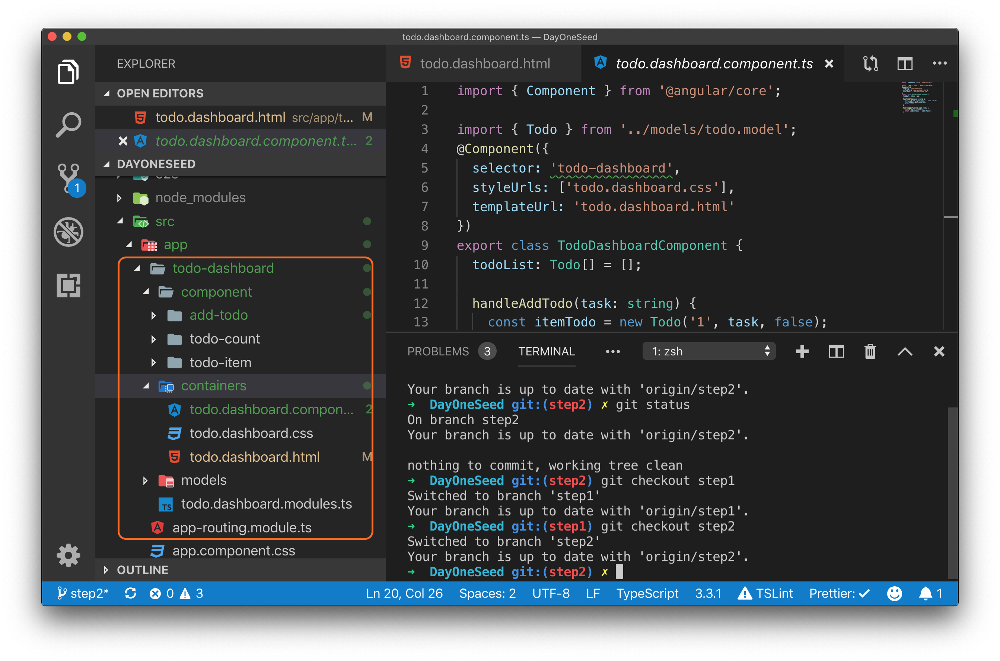
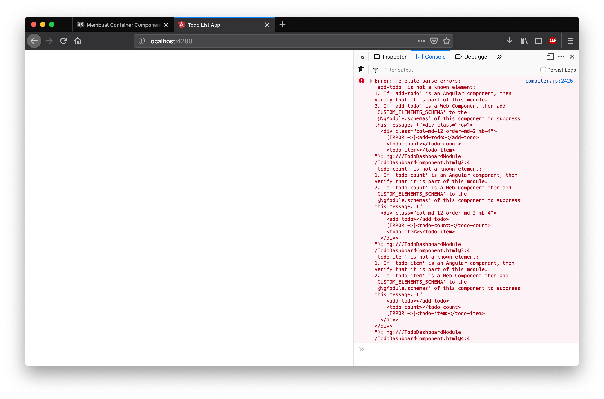

Container Component Todo Dashboard
Selanjutnya kita akan membuat container component sesuai dengan hasil analisa pada bab sebelumnya seperti pada gambar dibawah ini.

Pada component tree di atas dapat anda lihat bahwa terdapat 4 component dengan TodoDashboardComponent menjadi container dengan 3 presentational component yaitu AddTodoComponent, TodoItemComponent, dan TodoCountComponent. Pada percobaan kali ini kita akan membuat item item pada component tree tersebut dimulai dari TodoDashboardComponent.
Langkah Percobaan
Langkah pertama siapkan sebuah struktur folder untuk menyimpan file file yang dibutuhkan berdasarkan component tree yang sudah di desain.
└── todo-dashboard
├── component
│ ├── add-todo
│ │ ├── add.todo.component.ts
│ │ └── add.todo.html
│ ├── todo-count
│ │ ├── todo.count.component.ts
│ │ └── todo.count.html
│ └── todo-item
│ ├── todo.item.component.ts
│ └── todo.item.html
├── containers
│ ├── todo.dashboard.component.ts
│ ├── todo.dashboard.css
│ └── todo.dashboard.html
├── models
│ └── todo.model.ts
└── todo.dashboard.modules.ts

Seperti pada gambar dan folder tree di atas buatlah sebuah tiga buah di dalam folder todo-dasboard yaitu :
- component
- containers
- models
setelah itu di dalam folder component siapkan folder lain untuk menyimpan file file yang digunakan untuk presentational component :
- add-todo
- todo-count
- todo-item
Di dalam folder containers siapkan file untuk container component TodoDashboardComponen. Setelah semua folder dibuat lengkapi folder tersebut dengan file file yang ada di file tree, biarkan file tersebut kosong tapi dengan ekstensi file yang sesuai.
Kemudian untuk file todo.dashboard.component.ts kita tambahkan boilerplate code untuk pembuatan component dibawah ini.
import { Component } from "@angular/core";
@Component({
selector: "todo-dashboard",
styleUrls: ["todo.dashboard.css"],
templateUrl: "todo.dashboard.html"
})
export class TodoDashboardComponent {}
Kemudian lanjutkan dengan mengedit file todo.dashboard.html
<div class="row">
<div class="col-md-12 order-md-2 mb-4">
<!-- <add-todo></add-todo>
<todo-count></todo-count>
<todo-item></todo-item> -->
</div>
</div>
Kode html diatas digunakan pada todo.dashboard.html sebagai template container component dimana TodoDashboardComponent menjadi parent dari add-todo, todo-count dan todo-item. Perhatikan bahwa child component masih di pasang sebagai komentar agar tidak di eksekusi untuk menghindari error.
Untuk file todo.dashboard.css tambahkan kode program seperti dibawah ini :
.todo-input {
margin-bottom: 10px;
}
Setelah semua file pada folder containers selesai di isi lanjutkan dengan melakukan registrasi component tersebut ke module dalam hal ini ke file todo.dashboard.module.ts. Untuk menambahkannya lakukan import todo.dashboard.component di todo.dashboard.modules dengan menggunakan kode program dibawah ini:
import { TodoDashboardComponent } from "./containers/todo.dashboard.component";
Setelah import dilakukan maka TodoDashboardComponent dapat digunakan sebagai declaration di decorator@NgModule. Berikut ini kode program todo .dashboard.modules.ts setelah proses ini dilakukan
import { NgModule } from "@angular/core";
import { CommonModule } from "@angular/common";
import { TodoDashboardComponent } from "./containers/todo.dashboard.component";
@NgModule({
declarations: [TodoDashboardComponent],
imports: [CommonModule],
exports: [TodoDashboardComponent]
})
export class TodoDashboardModule {}
Selain menjadikan TodoDashboardComponent sebagai declaration, module ini juga melakukan export TodoDashboardComponent, ini artinya TodoDashboardComponent dapat digunakan oleh module lain yang melakukan import module ini.
Langkah selanjutnya adalah menggunakan container component ini di app component dengan merubah file app.component.html menjadi seperti dibawah ini.
<div class="container">
<todo-dashboard></todo-dashboard>
</div>

Jika server angular dijalankan pada tahap ini dan anda mendapatkan error pada console seperti gambar di atas itu karena child component belum di pasang komentar pada file todo.dashboard.html